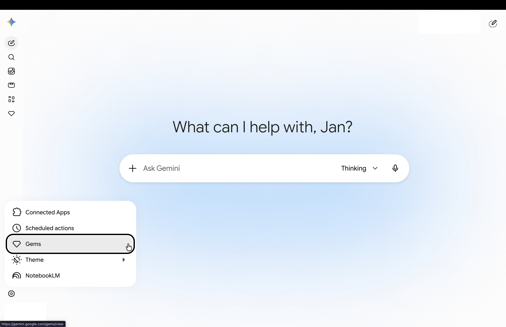
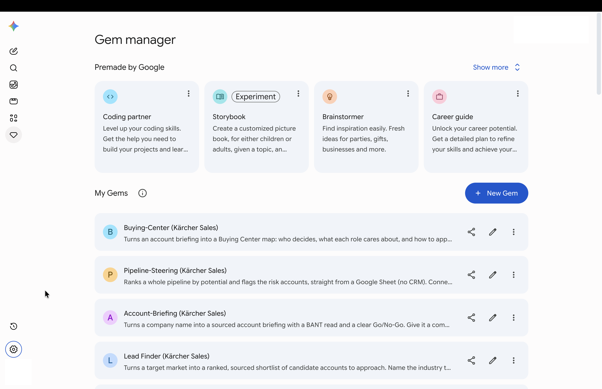
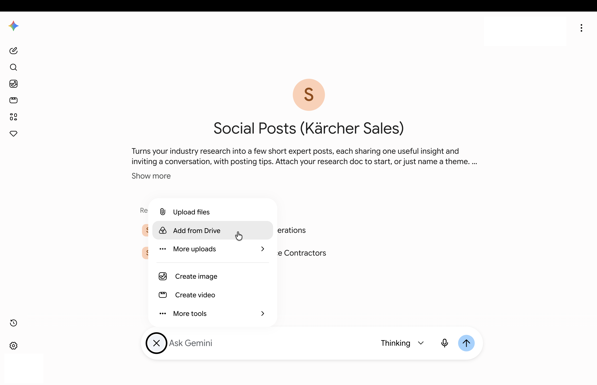
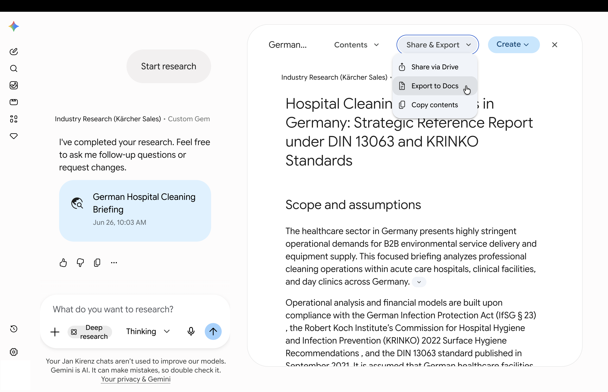
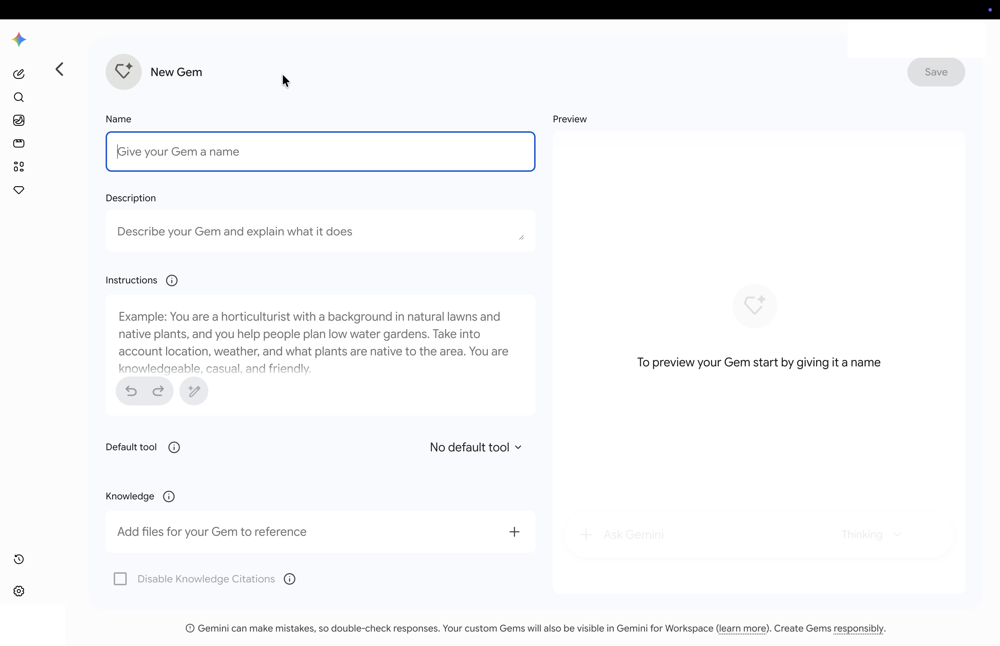

20 Gems
A Gem is the tool you reach for at almost every step of this training. Each step ships one ready-made, waiting in your Workspace.
For the training you never need to build a Gem yourself; you open one you were given, feed it, and save its answer. If you are curious how to build your own, there is an optional note at the end.
- A Gem is an AI assistant that has already been briefed for one job: open it, and it knows how Kärcher works.
- You don’t need to build Gems — you get a ready-made one for each step of the training.
- One setting from day one: in Gemini’s model picker at the top, choose the Thinking model — a moment slower, noticeably better answers. Make it your default.
20.1 What a Gem is, and where Gemini fits
Behind every Gem sits Gemini, the general-purpose assistant in your Kärcher Workspace (gemini.google.com): you type a request and get a draft back. A blank Gemini chat is the “new colleague” — useful for quick, one-off questions, but it knows nothing about your work, so you brief it from scratch every time.
A Gem is that same colleague after one good briefing. Instructions and a few reference documents are loaded in once, and they stick: from then on you just name the account and it already knows how we work. You do not build these yourself; you receive one ready-made Gem for each step of the cycle.
For the real work in this training you open a Gem, not a blank chat. Each step’s Recipe Card gives you a direct link, and clicking it opens that Gem already briefed and ready. That link is your way in — so the fastest way to understand a Gem is simply to open one, which is exactly what you do next.
20.3 Find a Gem again
Opening a Gem from its link is the “first door in”, and there is a reason that matters: a shared Gem usually does not appear in your own overview until you have opened it once. After that first use you can find it again without the link — through the settings (gear) icon at the bottom left of Gemini, then Gems.
Two steps: first click the gear icon at the bottom left of Gemini. Then, in the menu that opens, click Gems.

Next, you see the Gem Manager. The Gems you have already opened appear under My Gems.
Use this overview to open the right prepared Gem for the step you are working on.

20.4 Feed it a document, not a wall of text
The Gem already knows how to do the job. What it needs from you is the input for this account — your briefing, your notes, your need profile, a spec sheet. You attach that as a document rather than pasting it, so the input can be as long as it needs to be and you keep a clean record of exactly what the Gem read.
A Gem reads many formats — a Google Doc, a PDF, a Word file, a slide deck, a spreadsheet, even an image — straight from Drive or uploaded from your computer. In this training the input is usually a Google Doc, because each step exports its answer as a Doc that becomes the next step’s input (more on that below); but you are not limited to Docs.
- In the Gem’s prompt box, click the + (add / attach) and choose Add from Drive, or upload a file from your computer.
- Pick the document for this account — for example your NorthStar briefing Doc, or a PDF spec sheet.
- Type your short request, or use the prompt printed on the Recipe Card, and send.
Inside the Gem, use the + menu in the prompt box and choose Add from Drive.

20.5 Save the answer as a document
In some situations it is useful to save the Gem’s answer as its own document — for example when a later step will build on it. The clean way to do that is to export it to a Google Doc:
- At the bottom of the Gem’s answer, open Share & export.
- Choose Export to Docs — Gemini creates a new Google Doc in your Drive.
- Give it a clear name (account + step), so you can attach it at the next step.
After Gemini creates the result, open Share & Export and choose Export to Docs.

You will not do this every time. If you only need to read the answer, copy a few lines, or the output belongs somewhere else (a row in your account sheet, a slide), just skip the export. But where one step genuinely feeds the next, this Doc-to-Doc handoff keeps a clean trail of the work in one account folder, instead of a scroll of lost chat history.
You never need this for the training — every step ships a ready-made Gem. But once you have a prompt you reuse for your own recurring task (a weekly summary, a standard reply), it can be worth saving it as your own Gem so you do not rebuild it each time.
To build one: open the Gems list and choose New Gem. Give it a Name, an optional short Description, and in the Instructions write what it should do — the Role · Task · Context · Format · Check guide works here too. Under Knowledge you can add a few reference files (a price list, a product factsheet) so it always has them to hand, and the pane on the right previews the Gem as you go. Save it, and it appears under My Gems, ready to reuse like any shared Gem.
The New Gem editor: give it a Name, write its Instructions, and add reference files under Knowledge. The pane on the right previews the Gem as you build it.

One line stays clear: for the steps in this training, use the prepared Gems you were given. Building your own is for your personal, repeating tasks on top of that.